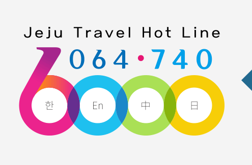

제주관광정보센터
탐라는제주에서는 여러분의 즐겁고 편안한 제주여행을 위해 제주관광정보센터를 운영하고 있습니다.
관광지 문의 · 관광 통역 · 휠체어 대여 · 교통문의 · 축제 및 행사정보 등 제주지역의 관광과 관련된 모든 것을 물어보세요!
한국어를 비롯한 영어, 중국어, 일어 3개 언어로도 이용 가능합니다.

-
 전문 제주관광 상담인력 보유양질의 관광정보 전달을 위해 신뢰성 있는 제주의 대표 관광정보센터 운영
전문 제주관광 상담인력 보유양질의 관광정보 전달을 위해 신뢰성 있는 제주의 대표 관광정보센터 운영
-
 응급상황을 대비한 유관기관 현장 출동 서비스제주특별자치도 자치경찰, 국가경찰, 119 안전신고센터, 제주특별자치도 관광협회 등 유관기관 연계를 통한 응급
상황 출동 서비스
응급상황을 대비한 유관기관 현장 출동 서비스제주특별자치도 자치경찰, 국가경찰, 119 안전신고센터, 제주특별자치도 관광협회 등 유관기관 연계를 통한 응급
상황 출동 서비스
-
관광객 위치기반 서비스 제공관광객의 현재 위치정보를 센터로 전송받아 인근 관광 정보 안내 (개인 정보 보호법에 의거
위치정보조회 동의 후 진행) -
이용 방법
온라인 : 콜센터 운영 +82-64-740-6000 ☞ 한국어 1번, 영어 2번, 중국어 3번, 일본어 4번
오프라인 : 제주관광정보센터 방문 안내
제주관광정보센터 방문 안내
제주관광정보센터 방문 안내
- 제주특별자치도 제주시 선덕로 23 웰컴센터, 제주관광정보센터(1층, 로비)
-
자동차
- 제주공항 입구에서 '중문, 한림, 신제주'방면으로 우회전
- 공항로를 따라 1.7km 이동
- 신대로를 따라 502m 이동
- 연동사거리에서 좌회전
- 선덕로를 따라 269m 이동 후 좌회전
-
버스
- 제주국제공항 정류장에서 500번, 70번, 200번 버스 승차 후 연동 주민센터 정류장에서 하차(4개 정류장 이동)
- 제주관광공사까지 약 278m 이동
-
자전거
- 공항입구 교차로까지 약 216m 이동
- 횡단보도를 이용해 공항로를 횡단
- 공항로를 따라 1.68km 이동
- 회전교차로 직진
- 신대로를 따라 510m 이동
- 횡단보도를 통해 신대로 횡단
- 선덕로를 따라 약 232m 이동 후 좌회전